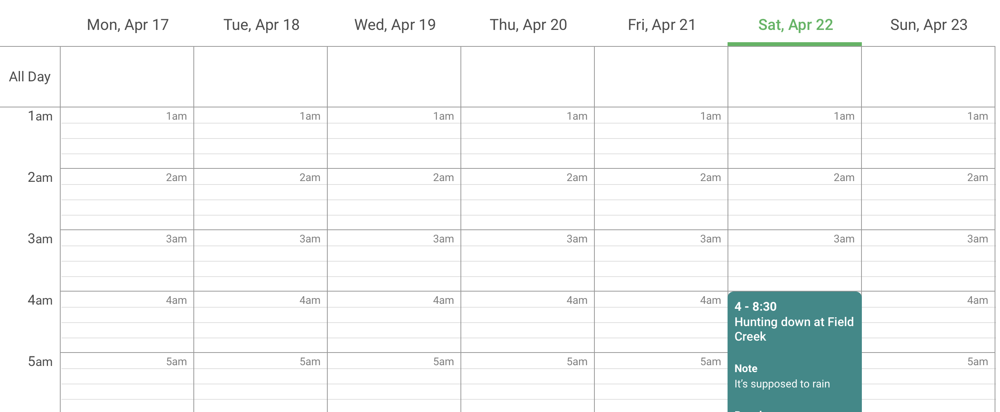
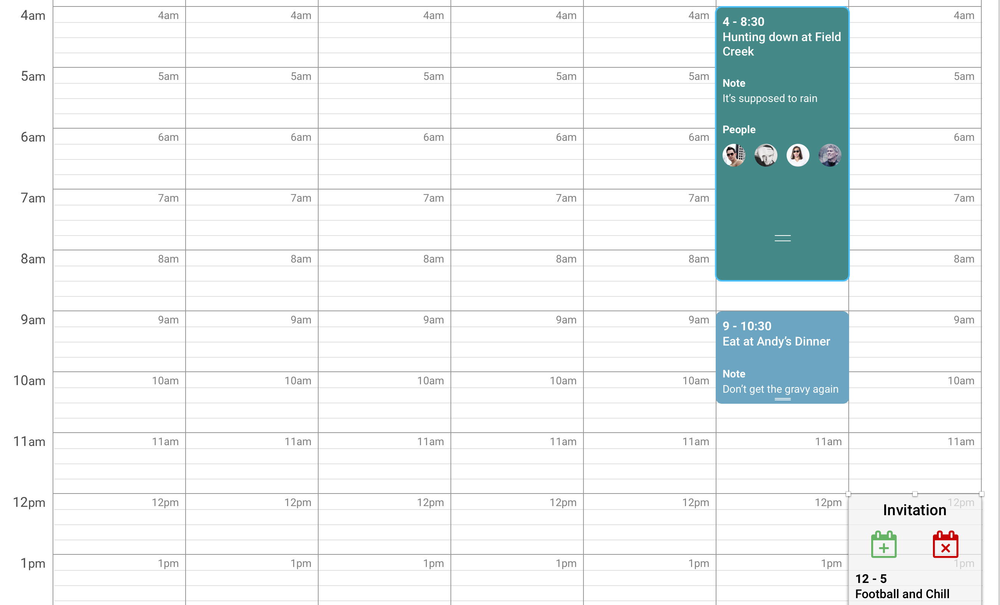
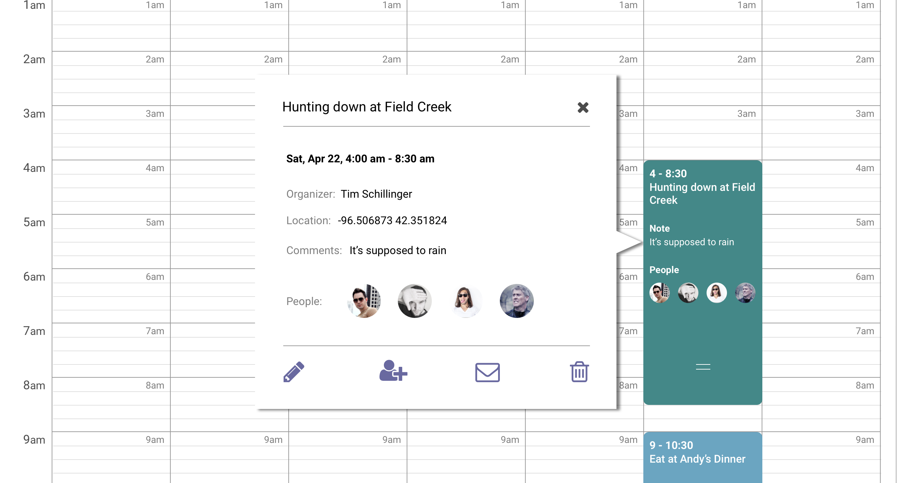
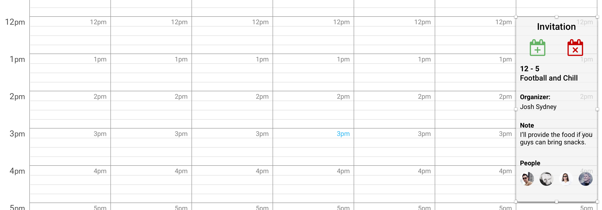
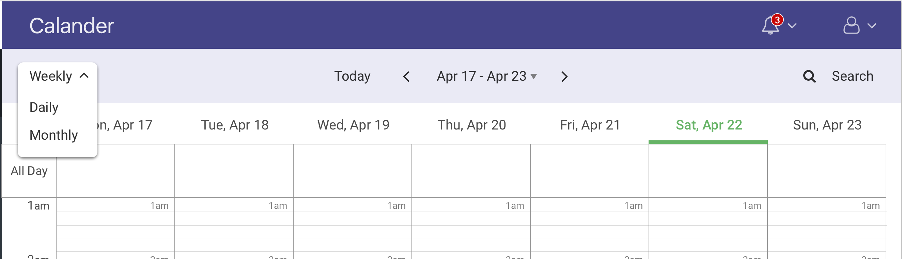
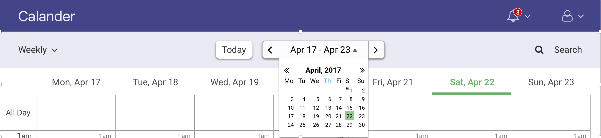
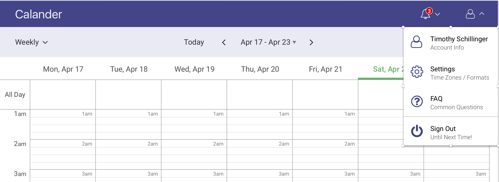

My Starting Point

A startup asked me to design their landing calendar page with a few showable interations. It needed to be functional, social, and beautiful.
The greatest issue I faced was creating from scratch. I was told to include a few links. But other than that, it was up to me to decide the syle of this project.
My Starting Point
My solution consisted of creating a context -never create in a void. So I sent out a survey to see what users wanted most in a planning calendar site. I learned that a good design needed to trim down complexity to the absolute bare essentials. Then, I tested my designs against user feedback to improve its look and feel.
Through a survey, I was able to discover that the chief complaint users had about calendar applications was complexity. Furthermore, after analyzing popular calendars, such as Calendly, Google Calendar, and Teamup, I had to agree that complexity plagued most applications. If this startup was going to attract socialites, it needed to contain complexity and maximize every pixel to intuitively package information.
Also through the survey, I wanted to discover the bare essentials for a calendar application. The top results told me to include: {1} A feature in which the user could format the calendar to a daily, weekly, and monthly structure, with little to no interest for a quarterly or yearly format; {2} A feature to search events rather than tediously eyeball the events on a calendar; {3} An uncomplicated date picker. Some other suggestions to note were an easy button to relocate the user back on today’s date when date picking and to represent a hypothetical event. All of this I considered paramount in my design direction.
After the first draft, I sent my mockups out for feedback. The most notable change to the design was that I had originally represented the 15 minute breakpoints within an hour with dashes. User feedback suggested these dashes were too distracting , almost hypnotizing. Replacing the dashes with faded, solid lines muted this effect.
User Feedback: Too Hypnotizing

Revision
The second most constructive feedback informed me that users didn’t want to see the first 6 hours of the day, since that part of the day is typically uneventful. Therefore, I suggested that once this design goes into production that the portion of the calendar beneath the “All Day” box display at 6am, rather than 1am, with the ability to scroll up to the earlier hours. If the user has set an event earlier than 6am, however, then the calendar may display at 1am. This concept was difficult to showcase through the static nature of a mockup and InVision, so I wanted to make special note of it here.
I also fleshed out a few interactions. Check out the InVision protoytpe.
Events
Event Information
Invites
Calendar Format
Date Picker
Notifacation

Profile Options
To design a modern calendar, I needed to understand what was most important to the user and which functions were secondary, or even tertiary. The core of my solution was to package certain features within more desired features (such as a mini calendar within the date selector) coupled with varying opacities to communicate hierarchy. The result is a calendar that doesn’t intimidate the user with sprawling information.